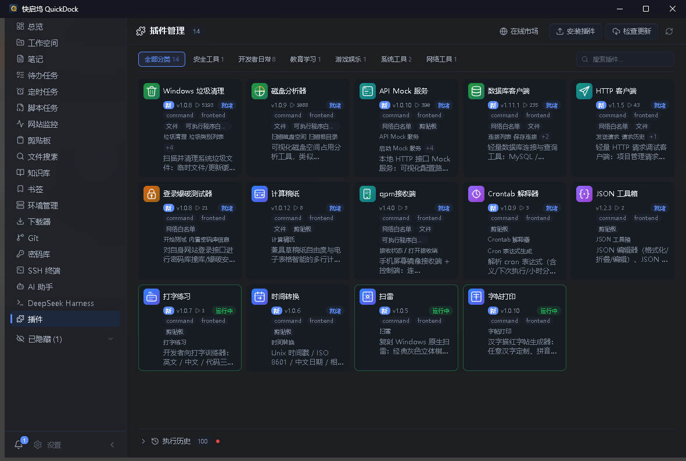

资源
资源摆在哪，按你的习惯来
工作空间隔离不同项目的上下文，场景是同一份资源的不同切面，集合按用途分组。任何一层都能拖拽排序。
- 四级结构：工作空间 → 场景 → 集合 → 项目
- FTS5 全文搜索，中文和英文都能命中
- 命令与网址支持
{date}{time}{clipboard}变量，打开时展开

· Windows 10 / 11 · MIT
资源树、命令面板、剪贴板、运行时管理、下载器、截图与窗口排版、SSH 终端、AI 助手。 单文件安装，不需要管理员权限，数据留在本机。
左边导航，中间集合，右边项目。资源树是四级结构，项目可以是目录、文件、网页、命令、应用，或者带参数的快捷方式。
工作空间隔离不同项目的上下文，场景是同一份资源的不同切面，集合按用途分组。任何一层都能拖拽排序。
{date} {time} {clipboard} 变量，打开时展开
语言、数据库、中间件、网络服务、开发工具，版本想装几个装几个。切换只改一个环境变量，不写注册表，不动系统 PATH。
*-t 校验
三种运行时：纯前端、内嵌 JS 沙箱、独立子进程。用到哪些能力就在 plugin.json 里声明，没声明的一律拒绝。

单独拿出来都不算稀奇，但同在一个窗口、共用一套快捷键，就不用为了截个图或看一眼日志再开一个应用。
tail -f 任意本机文件。文件被轮转或原地重写时自动重新对齐，可暂停、可过滤高亮。全部装在用户目录，便携优先，多版本共存。卸载只删程序，不动你的项目和模型。
下载源可以切换，地址里支持 {version} {os} {arch} 占位符。一个源连不上就换下一个，进度实时推回来。
启动、停止、重启都在列表里点。配置改完保存，Nginx 这类服务先校验再重载，语法错就停在原地，不会把正在跑的服务弄挂。
不写注册表，不改系统 PATH，不申请管理员权限。删掉目录就干净了，机器上不留痕。
对话页、SSH 终端侧栏、剪贴板条目、笔记浮窗共用同一份模型档案。
OpenAI、DeepSeek、Kimi、通义千问、Ollama、Azure，以及任意兼容接口。
SSH 侧栏把看到的现象转成可以执行的命令。
rm -rf、mkfs、DROP TABLE 只有「填入」，没有「执行」内置 MCP 服务，地址 http://127.0.0.1:9230/mcp。
内嵌完整的 Agent 编程入口，工具、文件、终端、会话都有。
按时间倒序，点开看细节。更早的版本在 GitHub Releases 里。
不需要。安装器把程序装到 %LOCALAPPDATA%\Programs\快启坞，运行时和数据都放在用户目录，不写注册表、不弹 UAC。也正因为如此，如果手动把程序装到 C:\Program Files，自动更新会因为没有写权限而失败，只能手动覆盖。
默认在 ~/.quickdock，包括数据库、剪贴板图片、插件和日志。应用不做任何后台同步，只有你主动配置 WebDAV 或调用 AI 接口时才会产生网络请求。空间不够时可以在「设置 → 存储与同步」把整个目录搬到别的盘。
不会。卸载只移除程序和注册表项，~/.quickdock 保留。重装后数据还在原处；确定不需要了再手动删这个目录。
每个版本会产出 darwin arm64 与 amd64 两个包，但主力开发和测试都在 Windows 上，macOS 侧的功能覆盖不完整，遇到问题请提 Issue。目前没有 Developer ID 签名，首次打开需要在系统设置里放行。